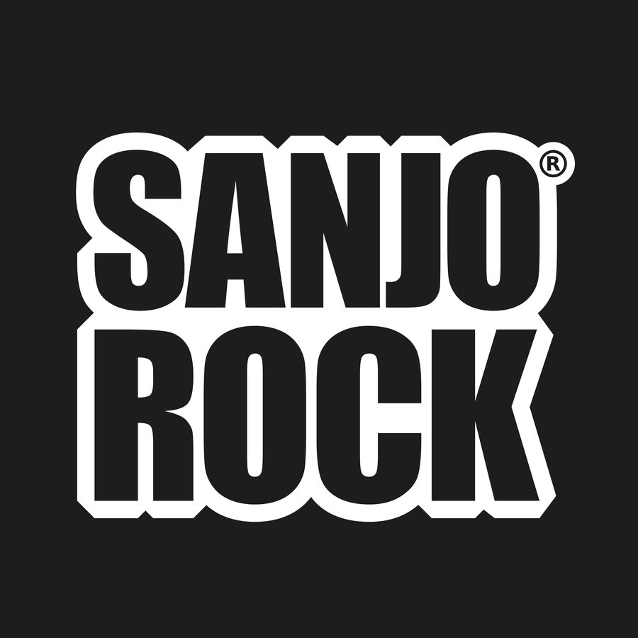

Para bancar el festival y llevarte algo puesto.
Marcas que ya están bancando a Sanjo Rock.
Publicitá tu negocio en Sanjo Rock 2026 (14 de noviembre, Predio Multieventos). Para reservar tu lugar, comunicate con los organizadores.
Para el Pre Sanjo Rock y Sanjo Rock, el equipo de decoración está necesitando conseguir estos materiales: